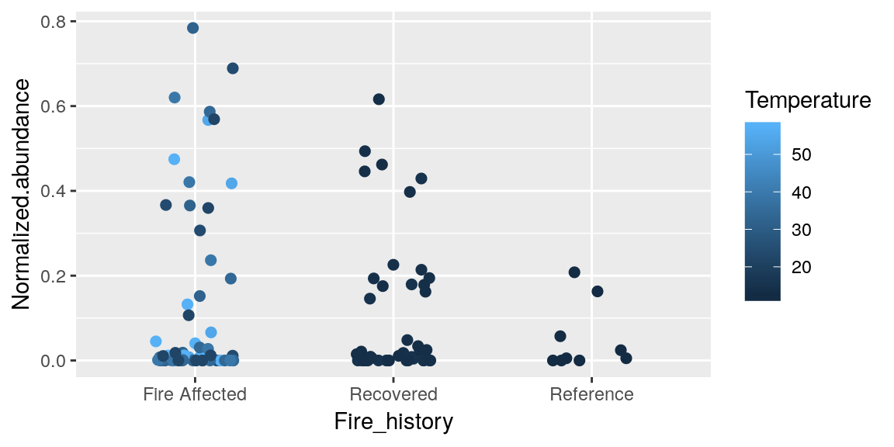
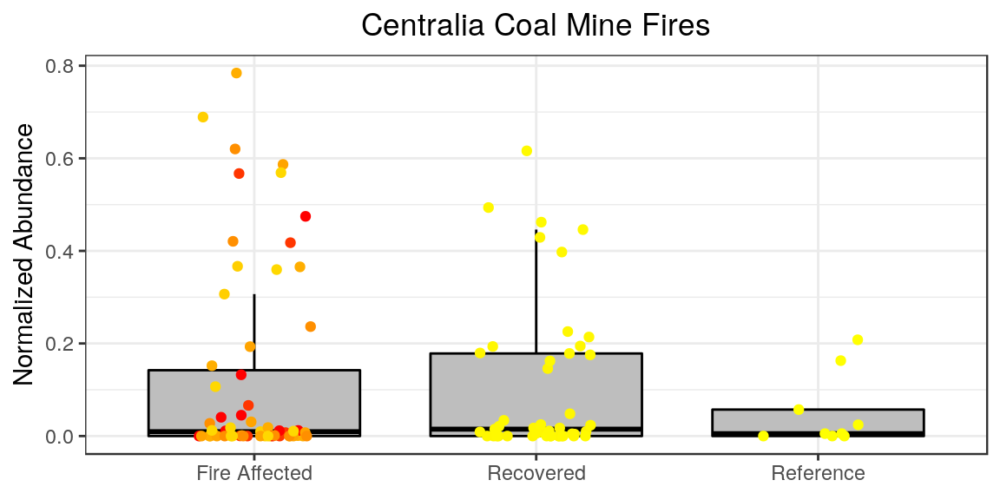
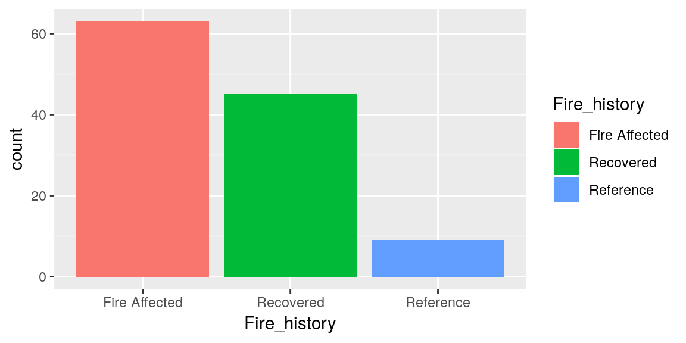
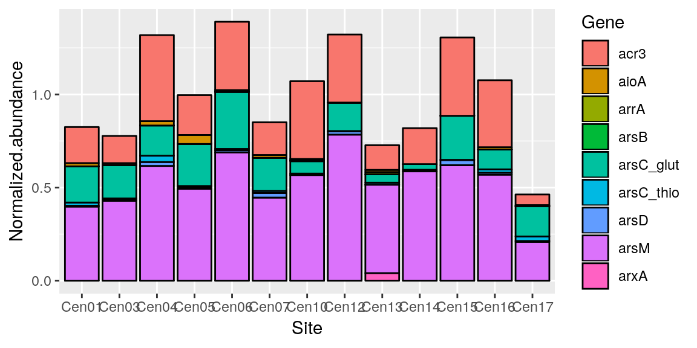

Exercise 4: Graphing Data
R is great for making graphics of your data. It has a base function plot() that can make all sorts of graphs, but an Iowa State Alumn from the Statistics department, Hadley Wickham, created a packaged ggplot using the grammar of graphics to enhance the functionality of making plots in R. The package is onto its second version ggplot2. This tutorial will be working with ggplot2, so we will need to install and load the package if we don’t have it already.
library(ggplot2)## RStudio Community is a great place to get help:
## https://community.rstudio.com/c/tidyverse.And let’s make sure that we have our practice data loaded.
readRDS(file = "merged_data.RDS")Plotting
The call to make a plot with ggplot2 is.. ggplot() so let’s try it.
ggplot(merged_data)ggplot has aesthetic arguments aes() that tell it what the plot should look like. Two of the arguments for the aes() are what the data should be for the axes x and y.
A plot called with ggplot can be called all at once but it’s good practice so assign the call to a variable and build on it from there. We will do this in this tutorial and hopefully it will be clear why this is a useful practice. The most common variable you will see people assign a plot to os p.
p <- ggplot(merged_data, aes(x = Fire_history, y = Normalized.abundance))**Note that ggplot knows that Fire_history is a reference to a data column in merged_data since merged_data was declared as the dataset in the argument.
and then we can call the plot with just the variable
pAll that does is make our plotting area. The way that ggplot works is that you start with your plot and then you add layers to is, so we will build on this base layer called with ggplot().
Geometric Layers
The geometric layers refers to the type of plot that we want. There are over 30 types of layers, but some of the most common ones to use are
geom_point() geom_line() geom_bar() geom_boxplot()
So let’s try one with ours. We add layers to our ggplot using + then the function call. ### test
p <- p + geom_point()
pSo now we have some data points on our graph! But what if we decided we wanted it to be a boxplot instead?
p <- p + geom_boxplot()
pLooks good! Except the points are still there.. you can add multiple geom layers to a graph so now we have both the points and the boxes. Once a geom is called we need to start the plot over if we decide we do not like it. So let’s reset our plot.
p <- ggplot(merged_data, aes(x = Fire_history, y = Normalized.abundance))Your geom can take arguments to change things about it also, such as color and fill.
p <- p + geom_boxplot(color = "blue")
pp <- p + geom_boxplot(fill = "green")
pNotice the difference in what these two options do.. and also notice that since these are layers.. when we call geom_boxplot() again it covers the first one, so all the arguments we want need to be in the first call.
p <- ggplot(merged_data, aes(x = Fire_history, y = Normalized.abundance))
p + geom_boxplot(color = "blue", fill = "green", outlier.color = "red")Colors in R
At its base, R uses the hexadecimal system for calling colors, but some colors have default values as we saw with "blue" and "green". These presets are stored in base-R in the colors() function. if you call that function it will return all 657 preset color names.
which(colors() == "blue")## [1] 26Blue is the 26th color in the presets, so we can also call it like that. There is a reference for what these colors look like if you ever want to get creative with your color use.
You can also look up the hexidecimal values for the colors.
p + geom_boxplot(color = colors()[26], fill = "green", outlier.color = "#FF3333")There is also a package called RColorBrewer which is handy for creating colorsets to use for your graphics.
Aesthetics and Colors
There are lot of different aesthetic options to use to help show the data represented in your plot.
If we use the geom_point() layer we can show each individual data point, but if you recall from the plot above when we first did this, some of the points overlapped a lot, so to help make it easier to see each of them there is an alternate geom_jitter() that will spread them out across the x-axis.
p + geom_jitter(size = 2, width = 0.2, aes(color = Temperature))
When you assign color = in aes() it is assigning the categories for the range of colors, based on preset color palletes in R, so here we said we want a new color for the range of values in Temperature.
We can do it by categories of the data we are plotting too.
ggplot(merged_data, aes(x = Fire_history, y = Normalized.abundance, fill = Fire_history)) +
geom_boxplot()To change these colors we can do this
p + geom_jitter(size = 2, width = 0.2, aes(color = Temperature)) +
scale_color_continuous(low = "yellow", high = "red")The most informative graph we can make so far combines everything we have seen so far (always be careful not to make a figure “too busy” however, it is possible to display and overwhelming amount of information)
p <- ggplot(merged_data, aes(x = Fire_history, y = Normalized.abundance))
p <- p + geom_boxplot(color = "black", fill = "grey", outlier.shape = NA )
p <- p + geom_jitter(size = 1.5, width = 0.2, aes(color = Temperature))
p <- p + scale_color_continuous(low = "yellow", high = "red")
p
**Note that boxplot needs to be called first so that it is not layered over the points.. try it in the other order to see what I mean.
Facets
What if we want to display which point belongs to each gene in our dataset? We have run out of thing to color, we could use shapes but we have 9 genes and that could be “too busy”.. mkaing 9 plots individuall is cumbersome. Facets allow for multiple panels in your plot.
p + facet_wrap(~ Gene)~ is used to mean ‘modeled by’.
There are other options for facest you can explore, but the facet_wrap() is extremely useful.
Labels
Labels on figures are the #1 thing that people will critique.. because they are and should be the easiest thing to understand. Therefor it is important to make your labels look nice. Sometimes this is just easier in post-production using some sort of graphic editor.. but we have lots of options for it in ggplot.
p <- p + ggtitle("Centralia Coal Mine Fires") +
ylab("Normalized Abundance") +
xlab("Fire Status") +
labs(color = "Temperature (°C)")
pThemes
There are 10 preset themes in ggplot. Selecting one sets a lot of options, but you can also manually set these yourself. Alternatively you can pick a theme and then tweak each option as you want from there. The most commonly used theme is theme_bw()
p <- p + theme_bw()
pVery subtle differences from what we had.. but we can change things from here. For whatever reason, by default the plot titles in ggplot are left-aligned. I persoinally like my titles centered. And I feel like our x-axis label is redundant information, so I want to remove that. Sometimes we don’t want the legend either. This can all be done in the theme options.
p + theme(plot.title = element_text(hjust = 0.5),
axis.title.x = element_blank(),
legend.position="none"
)
Theme is where all the subtle changed occur, and is very important. There are lots and lots of options in theme and worth the time to explore when you want to publish a figure. Almost always.. if you want to do it, there is a way.
Bar Charts
Bar charts are also very popular for displaying data, particularly abundances like we were working with before. Bar charts require at least one axis to be defined with a dataset, then the other will by default be counts of datapoints in that set.
ggplot(merged_data, aes(x = Fire_history)) +
geom_bar()We can color each bar in the char like we saw before.
ggplot(merged_data, aes(x = Fire_history, fill=Fire_history)) +
geom_bar()
But this is redundant information. We can’t color it by a y variable because our y is counts. So lets define our y as something more meaningful. To do this we need to change the stat = argument in our geom_bar().
ggplot(merged_data, aes(x = Fire_history, y = Normalized.abundance)) +
geom_bar(stat = "identity")Having 3 bars is not really maximizing the usefulness of our bar chart, so lets graph a different metric.
ggplot(merged_data, aes(x = Site, y = Normalized.abundance)) +
geom_bar(stat = "identity", color = "black", aes(fill = Gene)) 
Sometimes stacking the y doesn’t make much sense.. so we can “dodge” the bars. Also you may have noticed that our x is harder to read now becasue there are more labels, so we can fix that with theme()
p <- ggplot(merged_data, aes(x = Site, y = Normalized.abundance)) +
geom_bar(position = "dodge", stat = "identity", color = "black", aes(fill = Gene)) +
theme(axis.text.x = element_text(angle = 45, hjust = 1))
pBut there needs to be a balance between information presentation and becoming too much.
Saving Figures
Now that we have spent all this time creating the perfect graph we need to figure out how to do, arguably, the most important part.. getting it out of R.
The way to do this in base R is easy once you are used to it, but fairly unintuitive. Firstly you need to know about different image types
.png - Portable Network Graphs
.tiff - Tagged Image File Format
.jpeg - Joint Photographic Experts Group
.raw - raw
It’s a lot to know the attributes for all of these files. There are varrying opinions on which to use.. I recommend .png for its balance of detail and file size.
to save a file in R you use any of the functions with these file extensions name. Within the function you need the path/filename of where you want to save the image. The function has default settings for image size and resolution. If you are making a figure for a paper or poster then you need a large image with high resolution. You can adjust arguments for this. I am comfortable with inches, so I set units = "in", but there is also pixels “px”, centimeters “cm”, and milimeters “mm”. For high-resolution I recommend setting res = 300
png(filename = "My_Graph.png", width = 9, height = 5, units = "in", res = 300)Calling this function doesn’t save the graph though. It opens what R calls a ‘device’. This means that the next time you call a graphic in R it will open that graphic to that device (by default the null device is the console). Once we call our graph we then need to use dev.of() to close the png device and return to our console. If we do not, then R will continue saving the next graphics we call in this session to the file we specified.
p
dev.off()Now we should have our graph!
Another way to save this is with a function in ggplot.. which is for sure friendlier.
ggsave() will automatically save the last plot you called before this by default (can be changed with argument plot =. It automatically opens and closes the device, and it defaults to a res = 300. It can take the same height=, wdith=, and units= arguments also. Additionally it will automatically use the device that matches the file extension in your file =.
p
ggsave(filename = "My_Graph.png", height = 5, width = 5, units = "in")Final Practice
To sum it all up, try reproducing this graph from the dataset final_practice_problem.RDS. This is data from a project that I worked on and it should look like this.
## Sample OTU Abundance Treatment Month
## 2185 X5 OTU_2 53767 Bagged May
## 3060 X652 OTU_2 29150 Bagged June
## 2193 X5 OTU_5 19977 Bagged May
## 4705 X87 OTU_4036 15324 Exposed June
## 3068 X652 OTU_5 13588 Bagged June
## 2010 X473 OTU_2 13222 Bagged June
Good luck in your data analysis! And if you can’t find the answer online, never hesitate to ask a friend.
Schuyler Smith
Ph.D. Student - Bioinformatics and Computational Biology
Iowa State University. Ames, IA.